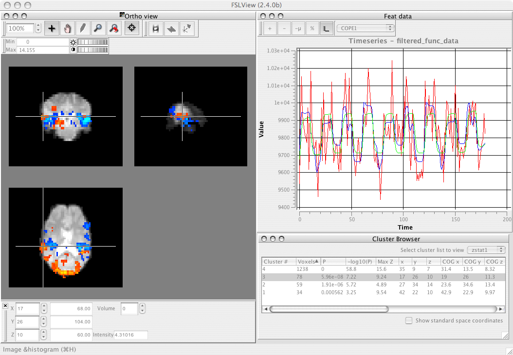

FSLView v3.1
Loading images into FSLView
Organising loaded images for display
Different image views
Mode toolbar (zooming, panning, etc.)
Brightness & contrast control
Cursor position widget
Image info widget
Masking & editing
Viewing FMRI data
Viewing Diffusion MRI data
Anatomical atlas tools
3D rendering
Starting FSLView from the terminal
Compiling FSLView from sources
Support, bug-reporting, etc.
Release Notes
